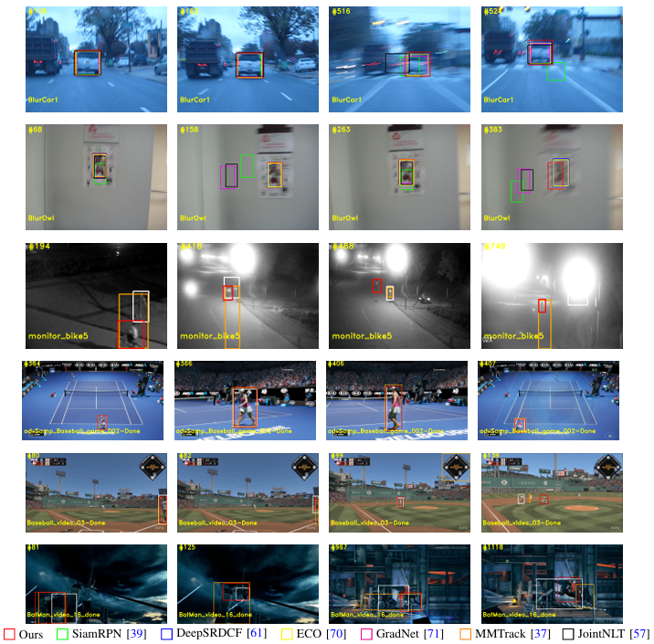

Single Target Tracking with Contextual Prompts in Scene Understanding
The architecture of the proposed SU-STTrack.
Abstract
This paper presents a single object tracker that
incorporates scene understanding, referred to as SU-STTrack,
which explicitly encodes the contextual information by the given
or Multi-modal Large Language Model (MLLM) generated
descriptions of the tracking scene. SU-STTrack merges the lin
guistic contextual prompts encoded using a pre-trained LLM and
visual features using a dual attention mechanism to strengthen
tracking robustness and adaptability, where channel attention
blocks are fixed within a multi-modality feature fusion process.
The experience replay strategy is further proposed, to maintain
long-term tracking performance by periodically refreshing the
tracking template with accumulated experiences, preventing the
model from catastrophic forgetting. SU-STTrack enables both
vision-only and vision-language tracking tasks to share the same
parameters. Through extensive experiments on vision-language
data sets (TNL2k, LaSOT and LaSOText) and vision-only data
sets (UAV123, NfS and OTB100), our tracker achieves 0.569 on
TNL2K, 0.628 on the challenging LaSOT, 0.528 on LaSOText,
0.646 on UAV123, 0.603 on NfS and 0.718 on OTB100 in terms
of the Area Under the Curve (AUC) metric with the inference
speed of 36.3 FPS. SU-STTrack normally surpasses state-of-the
art methods and shows superior generalization ability across
diverse and challenging tracking scenarios.
Links

Experimental Results
Comparison between the proposed SU-STTrack and state-of-the-art trackers on LaSOT in terms of the tracking accuracy (AUC) and speed.
|  |
| |
Visualization of the results of our tracker and six state-of-the-art baseline trackers on the challenging sequences contained in the OTB100and TNL2k data sets. Specifically, the challenges include motion blur (1st and 2nd rows), illumination variation and low resolution (3rd row), viewpoint change (4th row), out-of-view (5th row) and scale variation and full/partial occlusion (6th row).